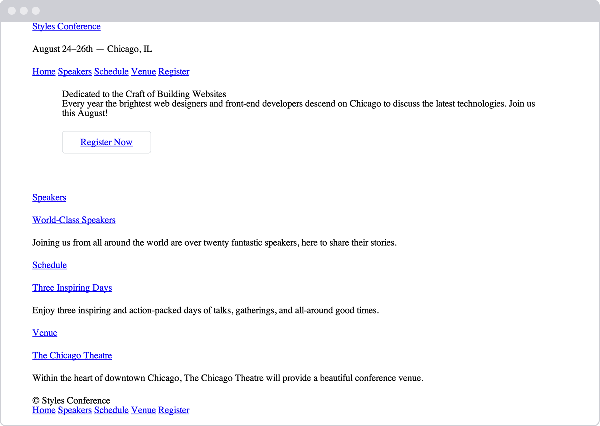

Working with the Box Model
Table of Contents
Opening the Box Model
We've familiarized ourselves with HTML and CSS; we know what they look like and how to accomplish some of the basics. Now we're going to go a bit deeper and look at exactly how elements are displayed on a page and how they are sized.
In the process we'll discuss what is known as the box model and how it works with HTML and CSS. We're also going to look at a few new CSS properties and use some of the length values we covered in Lesson 3. Let's begin.
How Are Elements Displayed?
Before jumping into the box model, it helps to understand how elements are displayed. In Lesson 2 we covered the difference between block-level and inline-level elements. To quickly recap, block-level elements occupy any available width, regardless of their content, and begin on a new line. Inline-level elements occupy only the width their content requires and line up on the same line, one after the other. Block-level elements are generally used for larger pieces of content, such as headings and structural elements. Inline-level elements are generally used for smaller pieces of content, such as a few words selected to be bold or italicized.
Display
Exactly how elements are displayed—as block-level elements, inline
elements, or something else—is determined by the display property.
Every element has a default display property value; however, as with
all other property values, that value may be overwritten. There are
quite a few values for the display property, but the most common are
block, inline, inline-block, and none.
We can change an element's display property value by selecting that
element within CSS and declaring a new display property value. A value
of block will make that element a block-level element.
p { display: block; }
A value of inline will make that element an inline-level element.
p { display: inline; }
Things get interesting with the inline-block value. Using this value
will allow an element to behave as a block-level element, accepting all
box model properties (which we'll cover soon). However, the element will
be displayed in line with other elements, and it will not begin on a new
line by default.
p { display: inline-block; }
Lastly, using a value of none will completely hide an element and
render the page as if that element doesn't exist. Any elements nested
within this element will also be hidden.
div { display: none; }
Knowing how elements are displayed and how to change their display is
fairly important, as the display of an element has implications on how
the box model is rendered. As we discuss the box model, we'll be sure to
look at these different implications and how they can affect the
presentation of an element.
<p>Paragraph one.</p> <p>Paragraph two.</p> <p>Paragraph three.</p>
p { display: inline-block; }
<iframe src="./examples/demo-01/demo-01.html"> </iframe>
The Space Between Inline-Block Elements
One important distinction with inline-block elements is that they are not always touching, or displayed directly against one another. Usually a small space will exist between two inline-block elements. This space, though perhaps annoying, is normal. We'll discuss why this space exists and how to remove it in the next lesson.
What Is the Box Model?
According to the box model concept, every element on a page is a rectangular box and may have width, height, padding, borders, and margins.
That's worth repeating: Every element on a page is a rectangular box.
Figure 1: When we look at each element individually, we can see how they are all rectangular, regardless of their presented shapes
Every element on every page conforms to the box model, so it's incredibly important. Let's take a look at it, along with a few new CSS properties, to better understand what we are working with.
Working with the Box Model
Every element is a rectangular box, and there are several properties
that determine the size of that box. The core of the box is defined by
the width and height of an element, which may be determined by the
display property, by the contents of the element, or by specified
width and height properties. padding and then border expand the
dimensions of the box outward from the element's width and height.
Lastly, any margin we have specified will follow the border.
Each part of the box model corresponds to a CSS property: width,
height, padding, border, and margin.
div { border: 6px solid #949599; height: 100px; margin: 20px; padding: 20px; width: 400px; }
According to the box model, the total width of an element can be calculated using the following formula:
total-width = margin-right + border-right + padding-right + width + padding-left + border-left + margin-left
In comparison, according to the box model, the total height of an element can be calculated using the following formula:
total-height = margin-top + border-top + padding-top + height + padding-bottom + border-bottom + margin-bottom

Figure 2: The box model broken down, including a base height and width plus paddings, borders, and margins
Using the formulas, we can find the total height and width of our example code.
- Width
492px = 20px + 6px + 20px + 400px + 20px + 6px + 20px- Height:
192px = 20px + 6px + 20px + 100px + 20px + 6px + 20px
The box model is without question one of the more confusing parts of
HTML and CSS. We set a width property value of 400 pixels, but the
actual width of our element is 492 pixels. By default the box model is
additive; thus to determine the actual size of a box we need to take
into account padding, borders, and margins for all four sides of the
box. Our width not only includes the width property value, but also
the size of the left and right padding, left and right borders, and left
and right margins.
So far a lot of these properties might not make a whole lot of sense,
and that's all right. To clarify things, let's take a close look at all
of the properties— width, height, padding, border, and
margin —that go into forming the box model.
Width & Height
Every element has default width and height. That width and height may be
0 pixels, but browsers, by default, will render every element with
size. Depending on how an element is displayed, the default width and
height may be adequate. If an element is key to the layout of a page, it
may require specified width and height property values. In this
case, the property values for non-inline elements may be specified.
Width
The default width of an element depends on its display value.
Block-level elements have a default width of 100%, consuming the
entire horizontal space available. Inline and inline-block elements
expand and contract horizontally to accommodate their content.
Inline-level elements cannot have a fixed size, thus the width and
height properties are only relevant to non-inline elements. To set a
specific width for a non-inline element, use the width property:
div { width: 400px; }
Height
The default height of an element is determined by its content. An
element will expand and contract vertically as necessary to accommodate
its content. To set a specific height for a non-inline element, use the
height property:
div { height: 100px; }
Sizing Inline-Level Elements
Please keep in mind that inline-level elements will not accept the
width and height properties or any values tied to them. Block and
inline-block elements will, however, accept the width and height
properties and their corresponding values.
Margin & Padding
Depending on the element, browsers may apply default margins and padding to an element to help with legibility and clarity. We will generally see this with text-based elements. The default margins and padding for these elements may differ from browser to browser and element to element. In Lesson 1 we discussed using a CSS reset to tone all of these default values down to zero. Doing so allows us to work from the ground up and to specify our own values.
Margin
The margin property allows us to set the amount of space that
surrounds an element. Margins for an element fall outside of any border
and are completely transparent in color. Margins can be used to help
position elements in a particular place on a page or to provide
breathing room, keeping all other elements a safe distance away. Here's
the margin property in action:
div { margin: 20px; }
One oddity with the margin property is that vertical margins, top
and bottom, are not accepted by inline-level elements. These vertical
margins are, however, accepted by block-level and inline-block elements.
Padding
The padding property is very similar to the margin property;
however, it falls inside of an element's border, should an element have
a border. The padding property is used to provide spacing directly
within an element. Here's the code:
div { padding: 20px; }
The padding property, unlike the margin property, works vertically
on inline-level elements. This vertical padding may blend into the
line above or below the given element, but it will be displayed.
Margin & Padding on Inline-Level Elements
Inline-level elements are affected a bit differently than block and
inline-block elements when it comes to margins and padding. Margins only
work horizontally — left and right — on inline-level elements.
Padding works on all four sides of inline-level elements; however, the
vertical padding — the top and bottom — may bleed into the lines
above and below an element.
Margins and padding work like normal for block and inline-block elements.
Margin & Padding Declarations
In CSS, there is more than one way to declare values for certain properties. We can use longhand, listing multiple properties and values one after the other, in which each value has its own property. Or we can use shorthand, listing multiple values with one property. Not all properties have a shorthand alternative, so we must make sure we are using the correct property and value structure.
The margin and padding properties come in both longhand and
shorthand form. When using the shorthand margin property to set the
same value for all four sides of an element, we specify one value:
div { margin: 20px; }
To set one value for the top and bottom and another value for the
left and right sides of an element, specify two values: top and
bottom first, then left and right. Here we are placing margins of
10 pixels on the top and bottom of a <div> and margins of 20
pixels on the left and right:
div { margin: 10px 20px; }
To set unique values for all four sides of an element, specify those
values in the order of top, right, bottom, and left, moving
clockwise. Here we are placing margins of 10 pixels on the top of a
<div>, 20 pixels on the right, 0 pixels on the bottom, and
15 pixels on the left.
div { margin: 10px 20px 0 15px; }
Using the margin or padding property alone, with any number of
values, is considered shorthand. With longhand, we can set the value for
one side at a time using unique properties. Each property name (in this
case margin or padding) is followed by a dash and the side of the box to
which the value is to be applied: top, right, bottom, or left.
For example, the padding-left property accepts only one value and will
set the left padding for that element; the margin-top property
accepts only one value and will set the top margin for that element.
div { margin-top: 10px; padding-left: 6px; }
When we wish to identify only one margin or padding value, it is
best to use the longhand properties. Doing so keeps our code explicit
and helps us to avoid any confusion down the road. For example, did we
really want to set the top, right, and left sides of the element
to have margins of 0 pixels, or did we really only want to set the
bottom margin to 10 pixels? Using longhand properties and values
here helps to make our intentions clear. When dealing with three or more
values, though, shorthand is incredibly helpful.
Margin & Padding Colors
The margin and padding properties are completely transparent and do
not accept any color values. Being transparent, though, they show the
background colors of relative elements. For margins, we see the
background color of the parent element, and for padding, we see the
background color of the element the padding is applied to.
Borders
Borders fall between the padding and margin, providing an outline around
an element. The border property requires three values: width,
style, and color. Shorthand values for the border property are
stated in that order— width, style, color. In longhand, these
three values can be broken up into the border-width, border-style,
and border-color properties. These longhand properties are useful for
changing, or overwriting, a single border value.
The width and color of borders can be defined using common CSS units
of length and color, as discussed in Lesson 3.
Borders can have
different
appearances. The most common style values are solid, double,
dashed, dotted, and none, but there are several others to choose
from.
Here is the code for a 6-pixel-wide, solid, gray border that wraps
around all four sides of a <div>:
div { border: 6px solid #949599; }
Borders Demo
<code class="border-solid">2px <br> solid</code> <code class="border-double">6px <br> double</code> <code class="border-dashed">8px <br> dashed</code>
code { background: #eaeaed; color: #666; font: 14px/24px "Source Code Pro", Inconsolata, "Lucida Console", Terminal, "Courier New", Courier; display: inline-block; height: 70px; margin: 0 14px; padding-top: 20px; text-align: center; width: 90px; } .border-solid { border: 2px solid #9799a7; } .border-double { border: 6px double #9799a7; } .border-dashed { border: 8px dashed #9799a7; } .border-dotted { border: 4px dotted #9799a7; }
Individual Border Sides
As with the margin and padding properties, borders can be placed on
one side of an element at a time if we'd like. Doing so requires new
properties: border-top, border-right, border-bottom, and
border-left. The values for these properties are the same as those of
the border property alone: width, style, and color. If we want,
we can make a border appear only on the bottom of an element:
div { border-bottom: 6px solid #949599; }
Additionally, styles for individual border sides may be controlled at an
even finer level. For example, if we wish to change only the width of
the bottom border we can use the following code:
div { border-bottom-width: 12px; }
These highly specific longhand border properties include a series of
hyphen-separated words starting with the border base, followed by the
selected side— top, right, bottom, or left —and then width,
style, or color, depending on the desired property.
Border Radius
While we're looking at borders and their different properties, we need
to examine the border-radius property, which enables us to round the
corners of an element.
The border-radius property accepts length units, including percentages
and pixels, that identify the radius by which the corners of an element
are to be rounded. A single value will round all four corners of an
element equally; two values will round the top-left=/=bottom-right and
top-right=/=bottom-left corners in that order; four values will round
the top-left, top-right, bottom-right, and bottom-left corners
in that order.
When considering the order in which multiple values are applied to the
border-radius property (as well as the margin and padding
properties), remember that they move in a clockwise fashion starting at
the top left of an element.
div { border-radius: 5px; }
Border Radius Demo
<code class="border-rounded">5px</code> <code class="border-circle">50%</code> <code class="border-football">15px 75px</code>
code { background: #eaeaed; color: #666; font: 14px/24px "Source Code Pro", Inconsolata, "Lucida Console", Terminal, "Courier New", Courier; display: inline-block; height: 90px; line-height: 90px; margin: 0 14px; text-align: center; width: 90px; } .border-rounded { border-radius: 5px; } .border-circle { border-radius: 50%; } .border-football { border-radius: 15px 75px; }
The border-radius property may also be broken out into longhand
properties that allow us to change the radii of individual corners of an
element. These longhand properties begin with border, continue with
the corner's vertical location (top or bottom) and the corner's
horizontal location (left or right), and then end with radius. For
example, to change the top-right corner radius of a <div>, the
border-top-right-radius property can be used.
div { border-top-right-radius: 5px; }
Box Sizing
Until now the box model has been an additive design. If you set the
width of an element to 400 pixels and then add 20 pixels of
padding and a border of 10 pixels on every side, the actual full
width of the element becomes 460 pixels. Remember, we need to add the
width, padding, and border property values together to get the
actual, full width of an element.
The box model may, however, be changed to support different
calculations. CSS3 introduced the box-sizing property, which allows us
to change exactly how the box model works and how an element's size is
calculated. The property accepts three primary values— content-box,
padding-box, and border-box —each of which has a slightly different
impact on how the box size is calculated.
Content Box
The content-box value is the default value, leaving the box model as
an additive design. If we don't use the box-sizing property, this will
be the default value for all elements. The size of an element begins
with the width and height properties, and then any padding,
border, or margin property values are added on from there.
div { -webkit-box-sizing: content-box; -moz-box-sizing: content-box; box-sizing: content-box; }
Browser-Specific Properties & Values
What are all those hyphens and letters on the box-sizing property?
As CSS3 was introduced, browsers gradually began to support different
properties and values, including the box-sizing property, by way of
vendor prefixes. As parts of the CSS3 specification are finalized and
new browser versions are released, these vendor prefixes become less and
less relevant. As time goes on, vendor prefixes are unlikely to be a
problem; however, they still provide support for some of the older
browsers that leveraged them. We may run across them from time to time,
and we may even want to use them should we wish to support older
browsers.
Vendor prefixes may be seen on both properties and values, all depending
on the CSS specification. Here they are shown on the box-sizing
property. Browser vendors were free to chose when to use a prefix and
when not to. Thus, some properties and values require vendor prefixes
for certain browser vendors but not for others.
Moving forward, when a property or value needs a vendor prefix, the prefix will only be used in the introduction of that property or value (in the interest of keeping our code digestible and concise). Do not forget to add the necessary vendor prefixes when you're actually writing the code.
For reference, the most common vendor prefixes are outlined here:
- Mozilla Firefox:
-moz- - Microsoft Internet Explorer:
-ms- - Webkit (Google Chrome and Apple Safari):
-webkit-
Padding Box
The padding-box value alters the box model by including any padding
property values within the width and height of an element. When
using the padding-box value, if an element has a width of 400
pixels and a padding of 20 pixels around every side, the actual
width will remain 400 pixels. As any padding values increase, the
content size within an element shrinks proportionately.
If we add a border or margin, those values will be added to the
width or height properties to calculate the full box size. For
example, if we add a border of 10 pixels and a padding of 20
pixels around every side of the element with a width of 400 pixels,
the actual full width will become 420 pixels.
div { box-sizing: padding-box; }
Border Box
Lastly, the border-box value alters the box model so that any border
or padding property values are included within the width and
height of an element. When using the border-box value, if an element
has a width of 400 pixels, a padding of 20 pixels around every
side, and a border of 10 pixels around every side, the actual width
will remain 400 pixels.
If we add a margin, those values will need to be added to calculate
the full box size. No matter which box-sizing property value is used,
any margin values will need to be added to calculate the full size of
the element.
div { box-sizing: border-box; }

Figure 3: Different box-sizing values allow the width of an element—and its box—to be calculated from different areas
Picking a Box Size
Generally speaking, the best box-sizing value to use is border-box.
The border-box value makes our math much, much easier. If we want an
element to be 400 pixels wide, it is, and it will remain 400 pixels
wide no matter what padding or border values we add to it.
Additionally, we can easily mix length values. Say we want our box to be
40% wide. Adding a padding of 20 pixels and a border of 10
pixels around every side of an element isn't difficult, and we can still
guarantee that the actual width of our box will remain 40% despite
using pixel values elsewhere.
The only drawback to using the box-sizing property is that as part of
the CSS3 specification, it isn't supported in every browser; it
especially lacks support in older browsers. Fortunately this is becoming
less and less relevant as new browsers are released. Chances are we're
safe to use the box-sizing property, but should we notice any issues,
it's worth looking into which browser those issues are occurring with.
Developer Tools
Most browsers have what are known as Developer Tools. These tools allow us to inspect an element on a page, see where that element lives within the HTML document, and see what CSS properties and values are being applied to it. Most of these tools also include a box model diagram to show the computed size of an element.
To see the Developer Tools in Google Chrome, click "View" within the menu bar and navigate to "Developer" and then "Developer Tools." This loads a drawer at the bottom of the browser window that provides a handful of tools for inspecting our code.
Clicking the magnifying glass at the bottom of this drawer enables us to hover over and then click on different elements on the page to review more information about them.
After selecting an element, we'll see a handful of tabs on the right-hand side of the Elements panel within our Developer Tools. Selecting the "Computed" tab will show us a breakdown of the box model for our selected element.
Play around with the Developer Tools, be it in Google Chrome, Mozilla Firefox, Apple Safari, or other browsers; there is much to learn from looking at our code. I generally leave the Developer Tools open at all times when writing HTML and CSS. And I frequently inspect the code of other websites to see how they are built, too.

Figure 4: The Google Chrome Developer Tools, which help us to inspect the HTML and CSS on any page
The box model is one of the most confusing parts of learning how to write HTML and CSS. It is also one of the most powerful parts of HTML and CSS, and once we have it mastered, most everything else—like positioning content—will come to us fairly easily.
In Practice
Let's jump back into our Styles Conference website to center it on the page and add some more content.
Let's start by adjusting our box size to use the
border-boxversion of the box model, which will make sizing all of our elements much easier. Within ourmain.cssfile, just below our reset, let's add a comment to identify the code for what will become our grid and help determine the layout of our website. We're putting this below our reset so that it falls in the proper position within the cascade.From there, we can use the universal selector,
*, along with universal pseudo-elements,*:beforeand*:after, to select every imaginable element and change thebox-sizingtoborder-box. Remember, we're going to want to include the necessary vendor prefixes for thebox-sizingproperty, as it is a relatively new property./* ======================================== Grid ======================================== */ *, *:before, *:after { -webkit-box-sizing: border-box; -moz-box-sizing: border-box; box-sizing: border-box; }
Next we'll want to create a class that will serve as a container for our elements. We can use this container class on different elements to set a common
width, center the elements on the page, and apply some common horizontalpadding.Just below our universal selector rule set, let's create a selector with a class of
container. Within this selector let's set ourwidthto960pixels, ourleftandrightpadding to30pixels, ourtopandbottommargins to0, and ourleftandrightmargins toauto.Setting a
widthtells the browser definitively how wide any element with the class ofcontainershould be. Using aleftandrightmargin ofautoin conjunction with thiswidthlets the browser automatically figure out equalleftandrightmargins for the element, thus centering it on the page. Lastly, theleftandrightpadding ensures that our content isn't sitting directly on the edge of the element and provides a little breathing room for the content..container { margin: 0 auto; padding-left: 30px; padding-right: 30px; width: 960px; }
Now that we have a container class available to use, let's go ahead and apply the class of
containerthroughout our HTML to the<header>and<footer>elements on each page, including theindex.html,speakers.html,schedule.html,venue.html, andregister.htmlfiles.<header class="container">...</header> <footer class="container">...</footer>
While we're at it, let's go ahead and center the rest of the content on our pages. On the home page, our
index.htmlfile, let's add the class ofcontainerto each<section>element on the page, one for our hero section (the section that introduces our conference) and one for our teasers section.<section class="container">...</section>
Additionally, let's wrap all of the
<h1>elements on each page with a<section>element with the class ofcontainer.<section class="container"> <h1>...</h1> </section>
We'll come back and adjust these elements and classes later, but for now we're headed in the right direction.
Now that all of our content is centered, let's create some vertical spacing between elements. For starters let's place a
22-pixelbottommargin on a few of our heading and paragraph elements. We'll place and comment on these typography styles below our grid styles./* ======================================== Typography ======================================== */ h1, h3, h4, h5, p { margin-bottom: 22px; }
We intentionally skipped
<h2>and<h6>elements, as the design does not call for margins on<h2>elements and as we won't be using any<h6>elements at this time.Let's also try our hand at creating a border and some rounded corners. We'll start by placing a button within the top
<section>element on our home page, just below the header.Previously we added an
<a>element within this<section>element. Let's add the classes ofbtnandbtn-altto this anchor.<a class="btn btn-alt">...</a>
Now let's create some styles for those classes within our CSS. Below our typography rule set, let's create a new section of the CSS file for buttons.
To begin let's add the
btnclass and apply some common styles that can be shared across all buttons. We'll want all of our buttons to have a5-pixelborder-radius. They should be displayed asinline-blockelements so we can addpaddingaround all four sides without issue; we'll remove anymargin./* ======================================== Buttons ======================================== */ .btn { border-radius: 5px; display: inline-block; margin: 0; }
We'll also want to include styles specific to this button, which we'll do by using the
btn-altclass. Here we'll add a1-pixel, solid, grayborderwith10pixels ofpaddingon thetopandbottomof the button and30pixels ofpaddingon theleftandrightof the button..btn-alt { border: 1px solid #dfe2e5; padding: 10px 30px; }
Using both the
btnandbtn-altclasses on the same<a>element allows these styles to be layered on, rendering all of the styles on a single element.Because we're working on the home page, let's also add a bit of
paddingto the<section>element that contains our<a>element with the classes ofbtnandbtn-alt. We'll do so by adding a class attribute value ofheroto the<section>element, alongside thecontainerclass attribute value, as this will be the leading section of our website.<section class="hero container"> ... </section>
Next we'll want to create a new section within our CSS file for home page styles, and, once we're ready, we'll use the class of
heroto applypaddingaround all four sides of the<section>element./* ======================================== Home ======================================== */ .hero { padding: 22px 80px 66px 80px; }
Our website is starting to come together, especially the home page.

Figure 5: Our Styles Conference home page, taking shape after a few updates
The Universal Selector
In the first step of this exercise we were introduced to the
universal selector. In CSS the asterisk, *, is the universal
selector, which selects every element. Rather than listing every single
element imaginable, we can use the asterisk as a catch-all to select all
elements for us.
The :before and :after pseudo-elements also mentioned in this step
are elements that can be dynamically generated with CSS. We're not going
to be using these elements within our project; however, when using the
universal selector it's a good practice to also include these
pseudo-elements in case they should ever appear.
Summary
Learning all the different parts of the box model is no small feat. These concepts, although briefly introduced, take quite a bit of time to fully master, and we're on the right path toward doing so.
In brief, within this lesson we talked about the following:
- How different elements are displayed
- What the box model is and why it's important
- How to change the size, including the height and width, of elements
- How to add margin, padding, and borders to elements
- How to change the box sizing of elements and the effects this has on the box model
Now that we have a better understanding of how elements are displayed and sized, it's time to move into positioning these elements.
Resources & Links
- The CSS Box Model via CSS-Tricks
- HTML Borders via Quackit.com